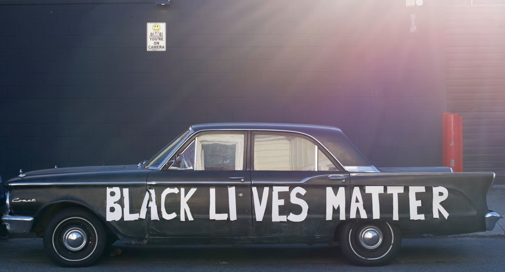

A 2020 Update
(Black lives matter, and Breonna Taylor’s killers still have not been charged.)
It has already become a cliche to talk about what a long decade this year has been. Like everyone else, I have struggled, and it has been a year of daily or sometimes hourly pendulum swings between depression, anxiety, grief, inspiration, gratitude, fear, awe, laughter, and an almost unbearable loneliness. I’ve been more angry and I’ve cried more times than at any other period in my life, and I’ve been by myself through it all. And I sit in full knowledge still of just how entirely privileged I am to be experiencing the events of this year in the way I have, from the remove that I have, even as the overlapping disasters seem to creep ever nearer in around us.
I’ll be honest, for the first couple of months I thought I would just burn idle and wait it out. My dreams for 2020, and I had dreamt especially big this year, were in shambles by February, as they involved longer term international travel. Then San Francisco was the first place in the US to go into shelter in place in early March, and I was truly stuck.
I’m no stranger to burning idle, though, so I accepted the challenge and spent my next two months when not working smoking an excessive amount of cannabis, playing video games, and practicing a form of retail therapy evocative of that scene in Fight Club where Edward Norton’s house is being furnished by an Ikea catalogue. My justification, not entirely without merit, was that if I was stuck in my home I might as well spruce the place up a bit to make it more bearable.
I live in a small basement studio apartment in the Mission district, with no yard and a door that opens directly onto the street. At first I was extremely strict - I did not leave the house for over a month, not even to walk my dog, who did her business in the alley behind the house. As someone who had typically been traveling once or twice a month, in an apartment which had a primary value proposition of being close to other amenities like bars and restaurants, I quite suddenly found myself in a solitary confinement of the most privileged sort.
In San Francisco, everything can be delivered to you: groceries from fancy organic community markets, cannabis from some of the finest dispensaries in the world, liquor, plants, computers, and most restaurants were already set up with delivery services for those willing to pay extra for what used to be convenience, and now was also additional safety. Of course, my taking advantage of all this requires a small army of “essential” or “frontline” workers taking additional risks on my behalf.
As you can imagine, this particular choice of coping practice did not ultimately lend itself well to my mental health. Depression crept in with its familiar enveloping weight, and a family crisis with my father desperately needing a surgery which had been deemed “elective” and therefore no longer allowed helped push me to an emotional state where it was all I could do to stay in touch with my immediate family, and all other social pursuits fell by the wayside. I did not reach out to a single friend for months, and those that reached out to me, I ignored.
As I’ve always found with depression, naming it and recognizing where I am does help, and at some point after my father finally managed to get his surgery I realized how far I’d sunk. By mid-May I was showing some signs of life and making slightly more contact with folks.
Then the George Floyd uprising began, and with it perhaps the most important political moment of my lifetime. From my position still stuck at home, with a surplus of empathy as well as a backdrop of protest-related-PTSD, reconciling myself with the massive emotional explosion of anguish and grief on the part of black people in American while also suddenly finding myself waking up each morning to fresh videos of nonviolent protesters being gassed and beaten by police forces was emotionally catastrophic. I backslid, watching more and more of the footage, doom scrolling on Facebook and Reddit, lashing out and getting into pointless arguments that would wind me up for hours.
A week or two into June, I had a moment of some clarity, some authentic reflection, and realized that a) my chosen mechanisms for engaging and coping with current events were doing me harm, and b) my ability to retreat into cannabis and doom scrolling was itself an aspect of my privilege that needed deep scrutiny.
I can never figure it out when I’m in the thick of a depression, but the smallest behavioral changes really do have cascading effects. A realization that a trajectory has changed can be so meaningful in fueling further change. And even still as I write this, especially as the events in Portland have recently pulled me slightly back into the grip of riot porn, I am less “out of the woods” than “more often finding a path beneath my feet”.
Even from this vantage, I find ideas, inspirations, connections, and meaningful things I can be doing come hurtling into my view, seemingly out of nowhere, the path appearing as I take a step, as it were. And eyes lifting ever slightly to see a bit further out.
And so it is with intent that I write this, specifically that of mapping out a tentative and evolving course for my journey. It involves an examination of all the daily ways I engage with the world, and an iterative process through that examination of making small changes to better align my values with my behaviors.
This project was underway before I even thought of it, and in my next post I’ll go further into the idea of the project and the steps I’ve already taken.
PS. This is the most candid thing I've ever written publicly under my own name. There's a lot of vulnerability in doing so, I'm realizing, but if ever there was a year to convince me that I might as well live my fully authentic self all the damn time, well, we in it. I also don't do any kind of tracking on this site, meaning I can't see any data about how many people read this or anything about them. And I'm not going to slap some annoying comment widget down here at the bottom of my posts, for multiple reasons. So, if this post did move you in some way that you'd like to share, I would love to hear your thoughts about it. Email me.